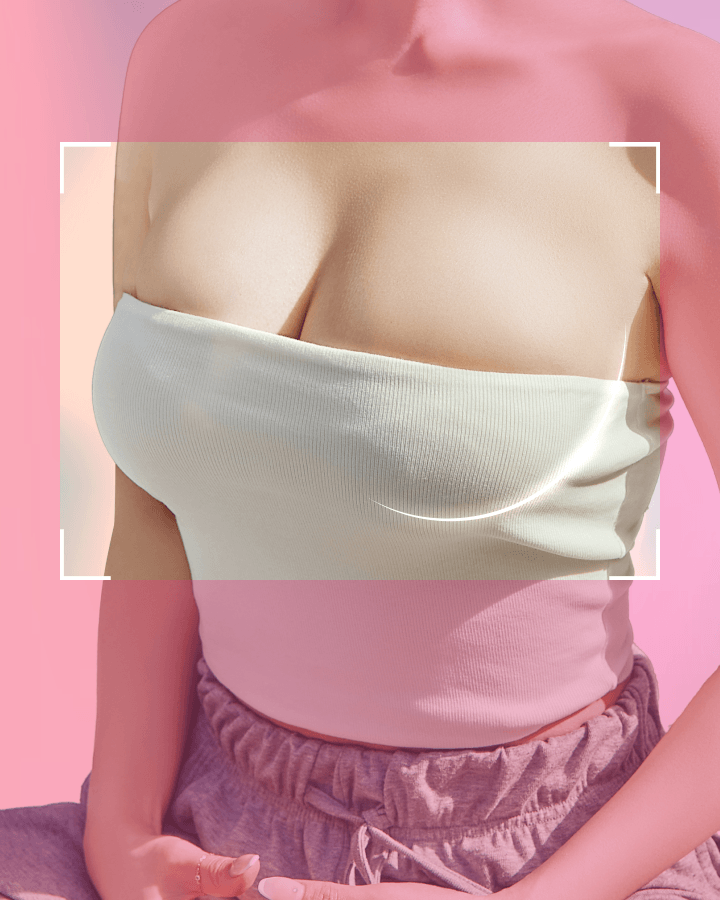
美丽的胸部让任何穿搭都更好看
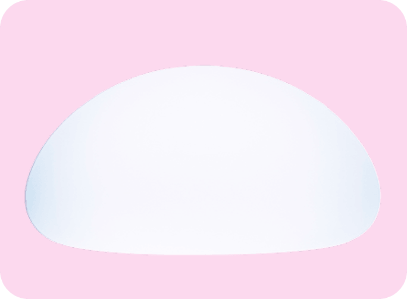
凭借 凡是与美 专有的假体覆盖技术，有助于预防包膜挛缩并持续改善触感！
通过高浓度 PRP 注射，
不仅改善质感，还能提升饱满度！
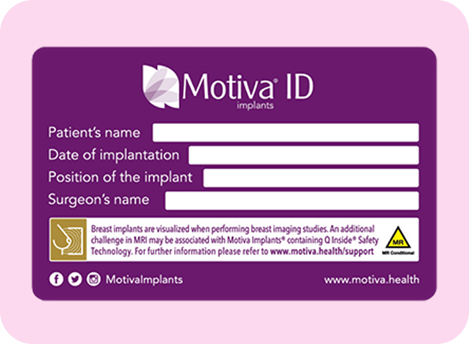
通过 MOTIFIT 保修计划，
我们为再次手术费用和假体提供支持。
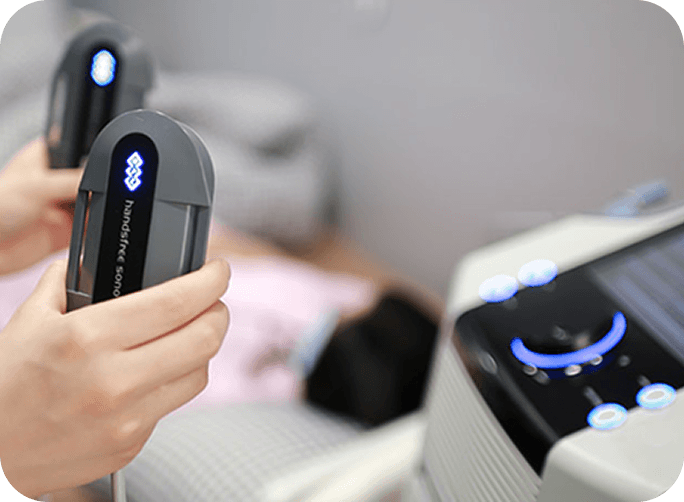
不仅预防包膜挛缩，
还能促进组织更快稳定，并减少肿胀和淤青！
MOTIFIT 专属私密护理区是专为 Motiva 隆胸患者提供的护理空间，在独立环境中支持私密咨询与术后护理。


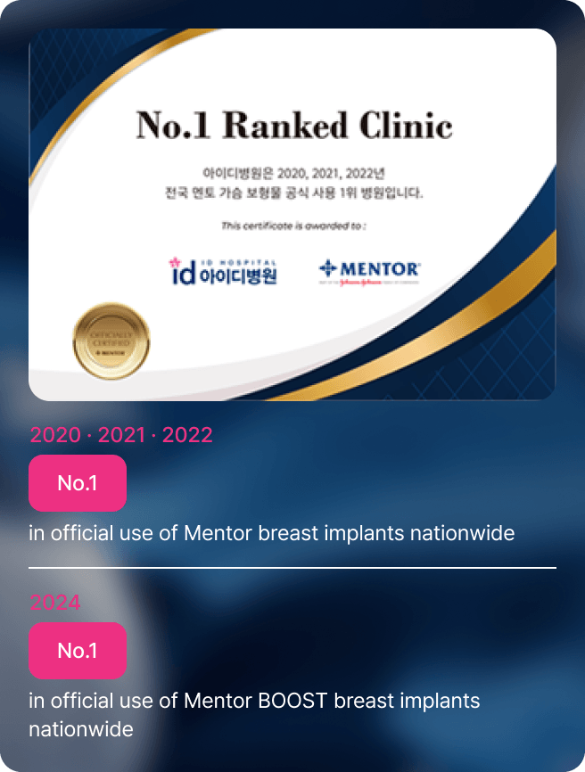
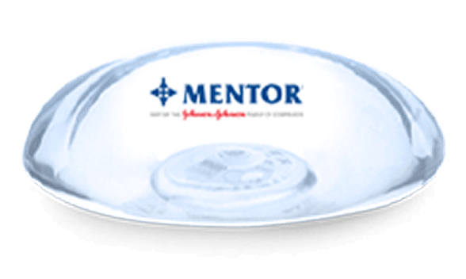
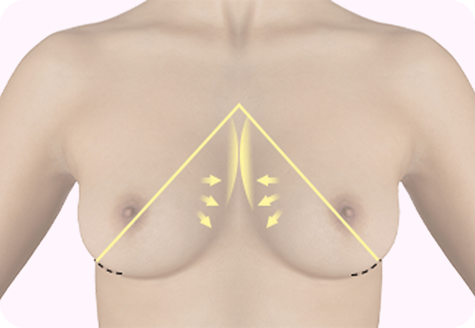
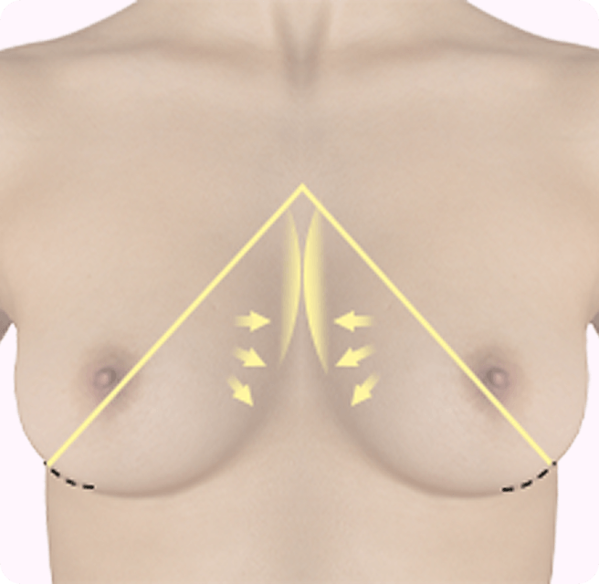
凡是与美 专属的蜜桃（U形）切口技术旨在打造完美的乳沟。通过 U 形切口隐藏乳房下皱襞疤痕，这种独特方法让重力自然地将乳房聚拢，形成更深、更自然的乳沟。
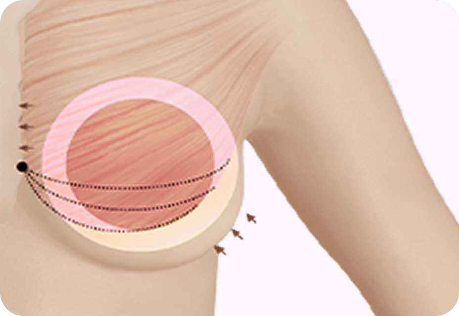
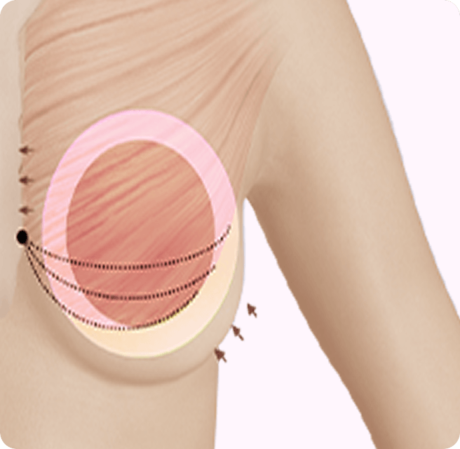
通过120%定制腔隙和360°精准剥离，我们打造优化的乳房腔隙，实现理想的尺寸和自然触感，带来完美贴合的效果。
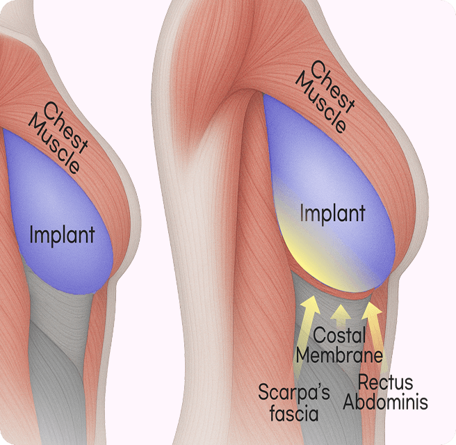
凭借 凡是与美的独家手术方法 — 与传统双平面技术不同，我们利用周围组织形成三重支撑，使乳沟更集中，并防止假体移位。
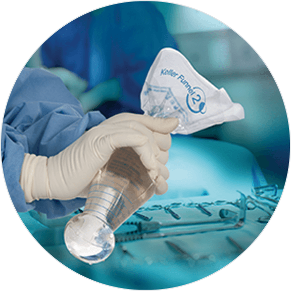
安全植入假体，最大限度减少神经和组织损伤
医用级粘合，无需拆线，减少疤痕顾虑
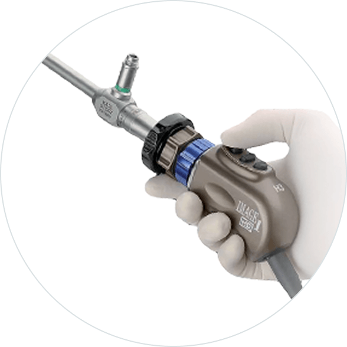
通过精准剥离实现无血无痛的手术

仅限 Mentor 隆胸患者，
we offer 专业 咨询 in a 专门 private 房间 to 帮助 you with 详细 and 个性化手术方案ning.
恢复才是真正的开始！专业术后管理
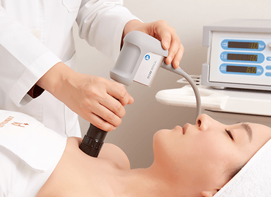
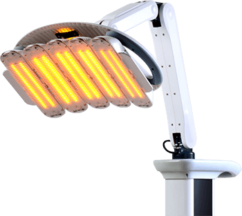
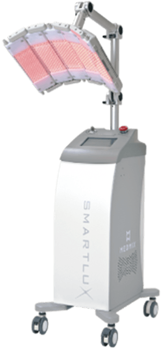
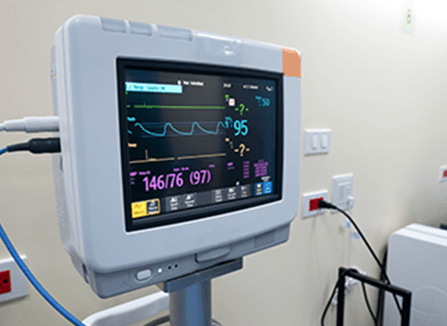
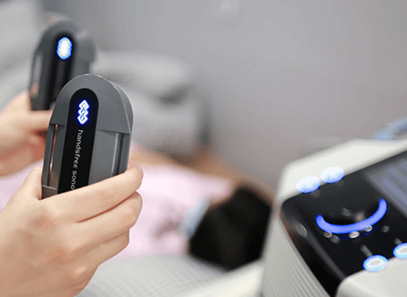
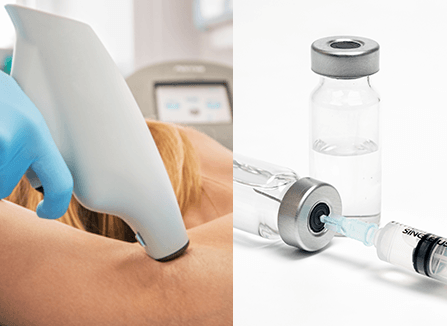
是否适合乳房缩小术，应根据患者的症状和身体状况，通过咨询和术前医学检查来确定。
如何确认是否适合
为什么咨询很重要
在 凡是与美
是的。凡是与美将乳房修复手术描述为需要精心规划的手术，包括与胸部外科专家咨询以及利用乳房超声进行原因分析。
何时需要考虑修复手术
在 凡是与美
乳房提升主要用于矫正下垂，而提升与隆胸结合则可通过假体同时增大乳房。
如何比较各方案
在 凡是与美
患者应比较主要困扰是下垂、乳房大小还是两者兼有，并通过面诊确认合适的方案。
各方案的差异
在 凡是与美
在 凡是与美, the 胸部 增大术 切口 方案 is 决定 after consultation, 医疗 检查-up, and 假体 选择.
手术方案如何规划
在 凡是与美
由于乳房提升术和隆胸的手术细节不同，恢复情况也会有所不同。
恢复信息
在 凡是与美
乳房提升与假体解决的是不同的问题，因此长期规划应综合考虑下垂矫正、容积目标、假体选择和术后护理。
目标的差异
在 凡是与美
Travel 时机 should be 确认 with 凡是与美 因为 the 提供 页面 描述 检查 步骤 and 手术 恢复时间s, but do not 给予 one 固定 停留 长度 for all 胸部 手术.
日程如何安排
在 凡是与美
暂无帖子
 保健福祉部认证医疗机构
保健福祉部认证医疗机构 凡是与美 手术技术专利与商标
凡是与美 手术技术专利与商标 连续4年骨轮廓手术量第一，获韩国纪录院认证
连续4年骨轮廓手术量第一，获韩国纪录院认证 凡是与美 手术技术专利与商标
凡是与美 手术技术专利与商标 凡是与美医学论文大数据
凡是与美医学论文大数据 凡是与美医学论文大数据保健福祉部认证医疗机构凡是与美 手术技术专利与商标连续4年骨轮廓手术量第一，获韩国纪录院认证凡是与美 手术技术专利与商标凡是与美医学论文大数据凡是与美医学论文大数据
凡是与美医学论文大数据保健福祉部认证医疗机构凡是与美 手术技术专利与商标连续4年骨轮廓手术量第一，获韩国纪录院认证凡是与美 手术技术专利与商标凡是与美医学论文大数据凡是与美医学论文大数据凡是与美与 Mentor 强强联手，带来高端质感的丰盈与手感！为您打造完美贴合身形的 Mentor 美胸曲线。
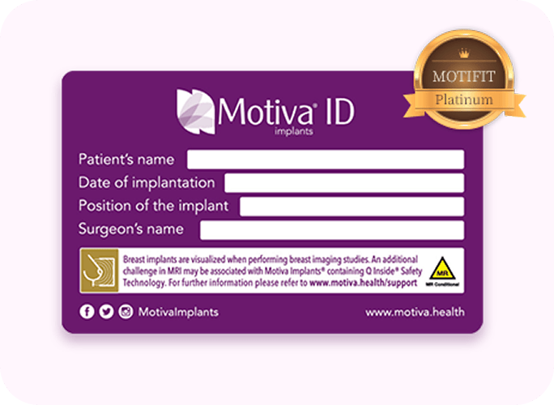
所有假体均可注册保修，无论是否带芯片！提供二次手术费用及假体支持（术后5年内发生假体破裂或贝克3-4级包膜挛缩时）
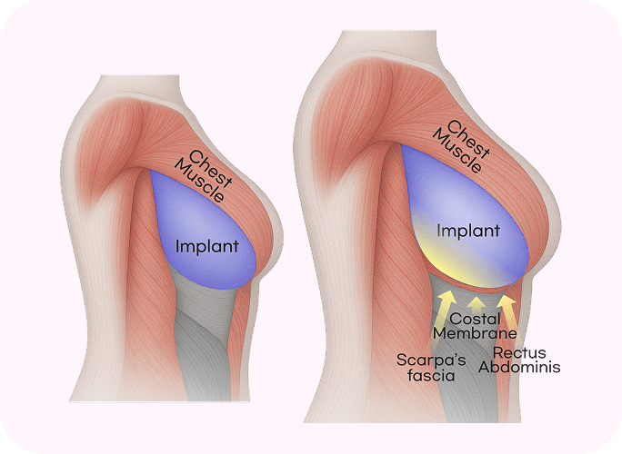
与传统双平面技术不同，凡是与美 采用独特手术方法，利用周围组织形成三重支撑，使乳沟更集中，并防止假体向两侧或下方移位。
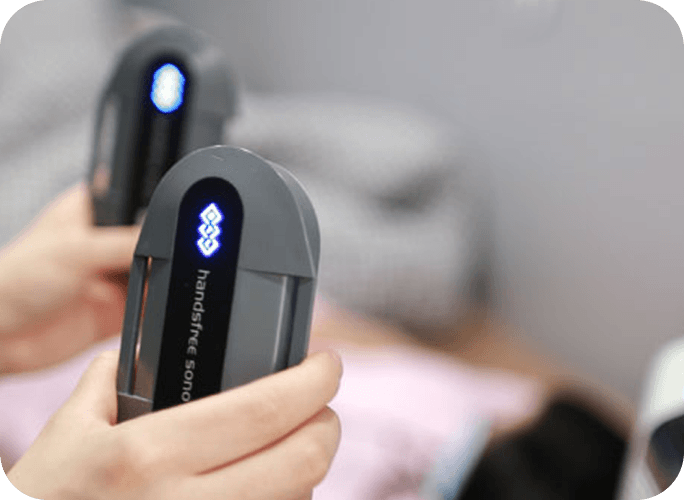
体验 凡是与美的优质术后护理，包括 Heal-Light 愈合光疗、SmartLux、包膜挛缩治疗、Endermologie RF 射频、舒缓石袋以及定制压缩衣，全程为您的术后恢复提供支持。